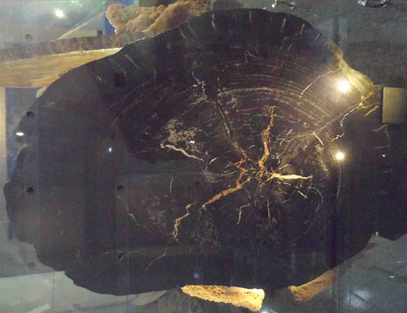
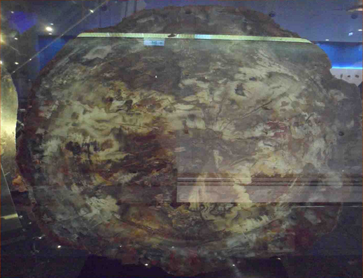
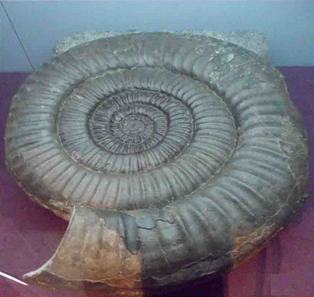

大地的結晶
岩層中的化石是地質年代的指標，也是地質史及古沈積環境研究上極為重要的證據。

矽化木
中生代矽化木，一種裸子植物，似冷杉，木材縱向細胞構造保持相當完整。但年輪不明顯，可能當時四季氣候變化不大，大部分已瑪化。

矽化木
中生代的裸子植物，似紅豆杉，年輪變化明顯。放大鏡下可分辨原有的細胞特徵。

矽化木
菊石生活在海洋中，屬於頭足綱的軟體動物，與現今的鸚鵡螺是近親。
在古生代出現，到中生代時特別繁盛，種類非常多，但與恐龍命運相同，在中生代末期就完全滅絕了。